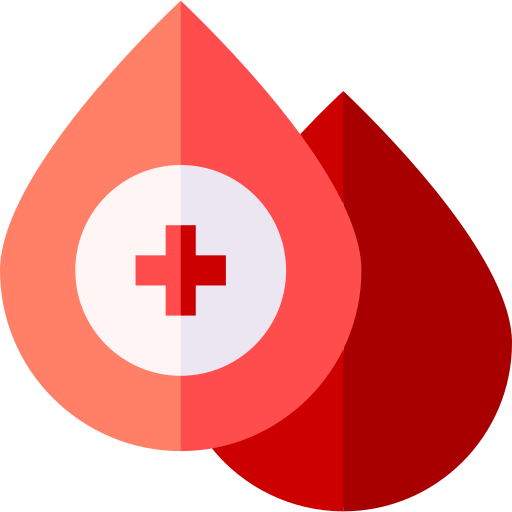
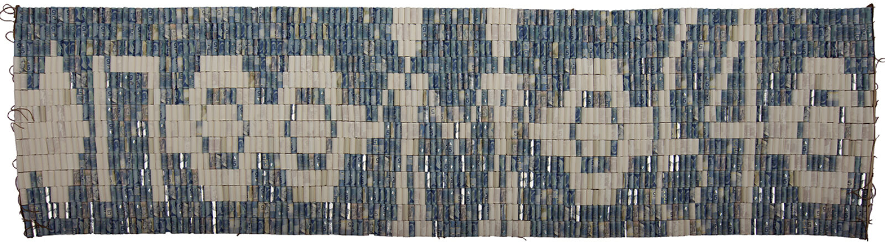
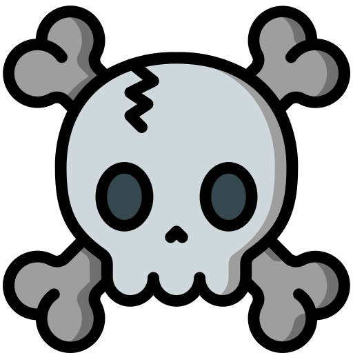
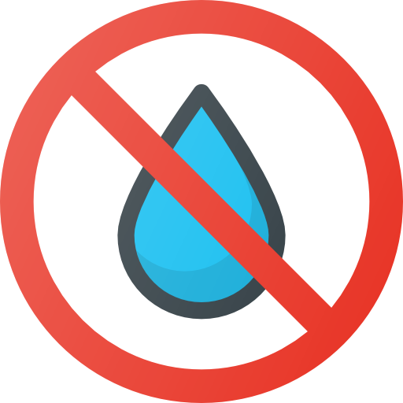
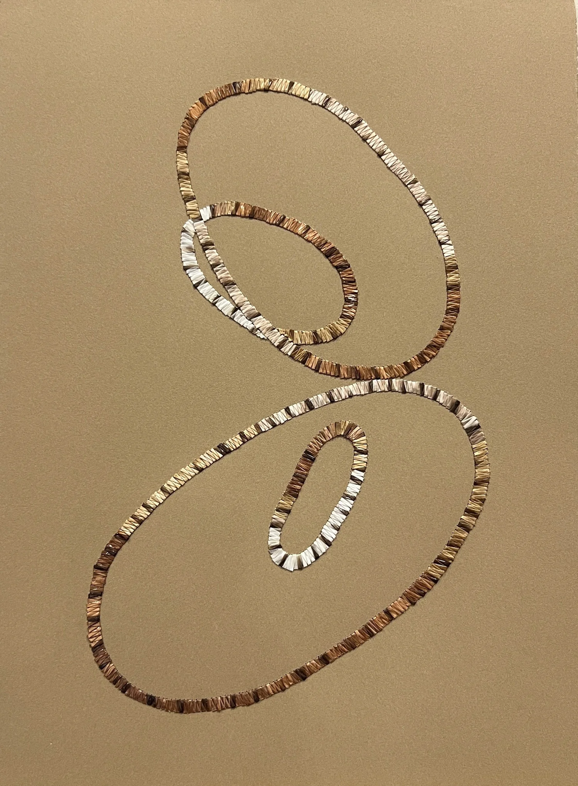
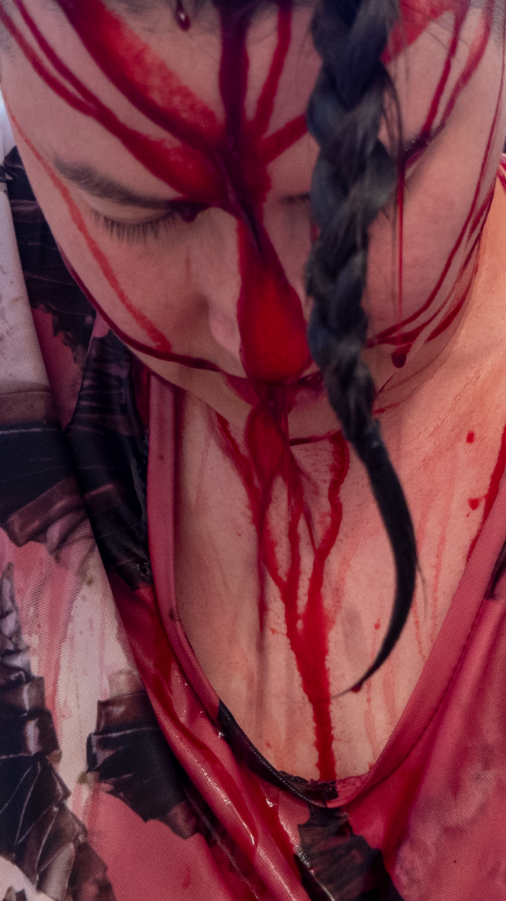
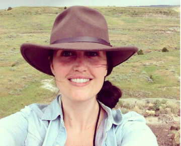
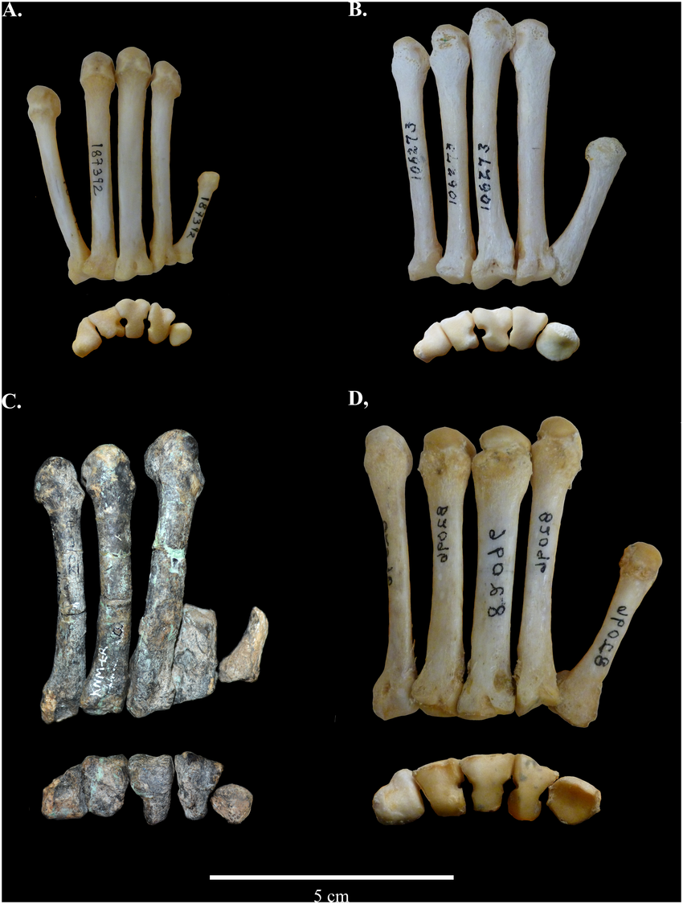
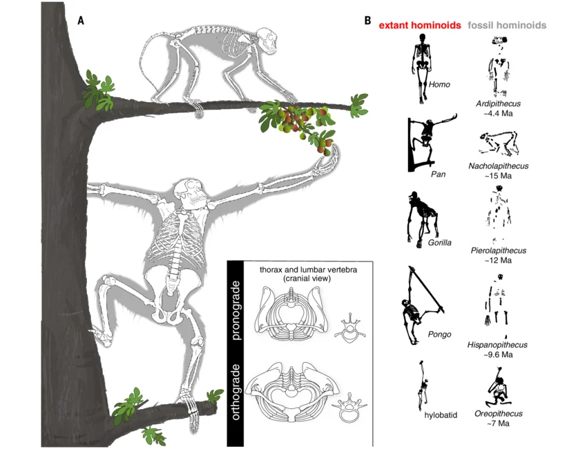

Anna Stielau_ Photography / Infrastructural art / South Africa




Vanessa Dion Fletcher_


Vanessa Dion Fletcher is a Lenáape and Potawatomi neurodiverse artist. Utilizing symbolic materials such as porcupine quills, Wampum belts, and menstrual blood, she reveals the physical and cultural complexities that define the body.
Spanning performance, textiles, and video, her work challenges the colonialism and ableism of language. By centering the experiences of an Indigenous feminist body and a neurodiverse mind, she reshapes the fragmented structures of communication into profound visual art.
Kelsey Pugh_



Kelsey Pugh is a paleoanthropologist and Assistant Professor at OCAD University, where she investigates the evolutionary origins of the human body. By bridging the gap between ancestral primate fossil records and cutting-edge 3D virtual reconstruction technology, she works to visualize the "missing links" of human evolution.
She analyzes the anatomical traces etched into fossils to trace the origins of bipedalism and the structural transformation of the body. Exploring the evolutionary knowledge embedded in prehistoric materials, she addresses the complex lineage and scientific implications of how the biological human body came to be defined in its current form.
Anna Stielau_
Dr. Anna Stielau is an Assistant Professor of Art History and Visual Culture at OCAD University, specializing in how contemporary African artists utilize media and technology to reimagine the world. She redefines photography as an "infrastructural art" dependent on light, power, and water. Her research explores how art navigates and thinks through resource constraints, shifting our focus from the final image to the underlying systems that make its existence possible.